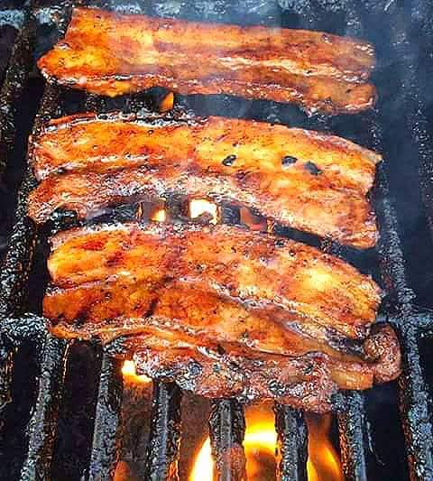
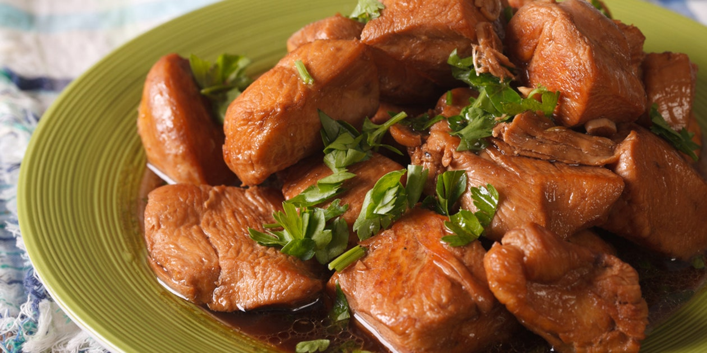
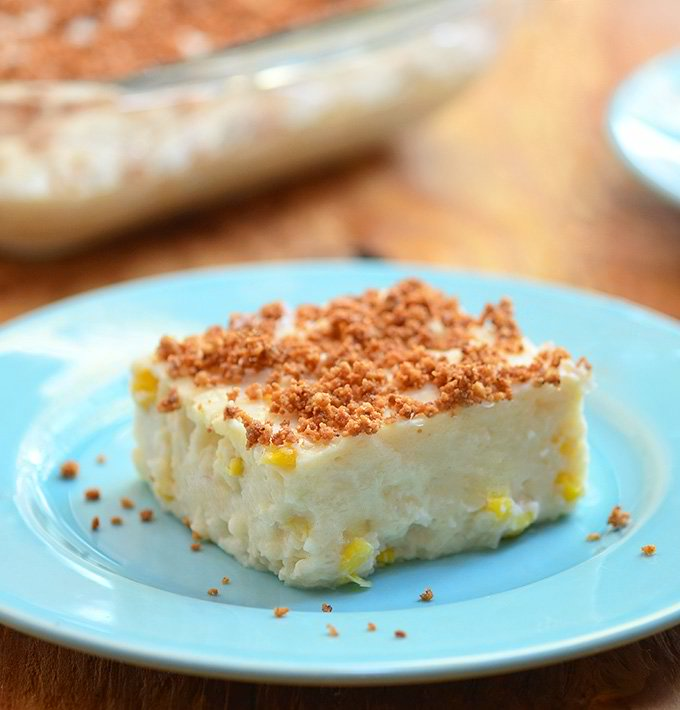

I LOVE FOODS! Here are some:

Inihaw na Liempo is known as Grilled Pork Belly in Filipino. This dish needs no introduction at all because the name of the dish already introduces itself. Favorite ko ito.

The word "adobo" is derived from the Spanish word meaning "sauce" or "marinade" and the key ingredients in any authentic recipe for Filipino chicken adobo are vinegar and soy sauce. Masarap ang adobo tuwing lunch. Pwede rin kapag dinner.

Maja Blanca is a Filipino dessert made from coconut milk, cornstarch, and sugar. Often called Coconut Pudding. Panghimagas ni justin.